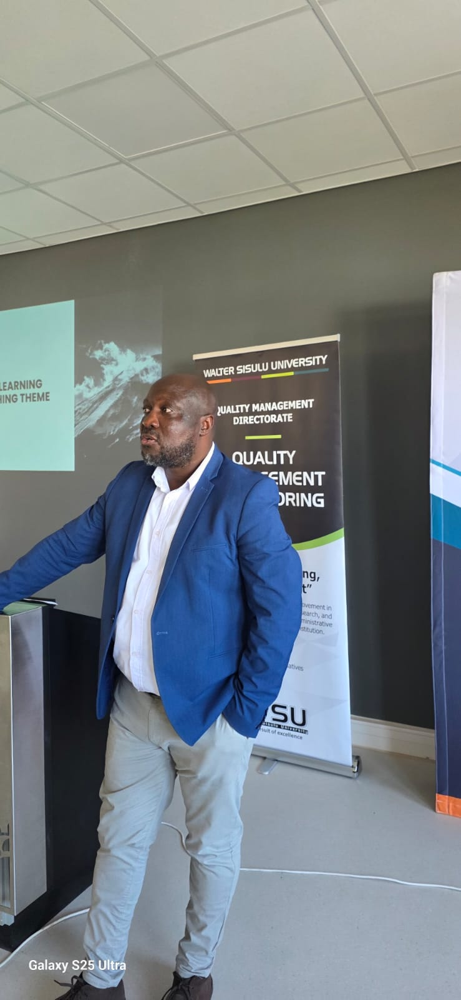

PME Executive Director
Ms Olivia Mokgatlee
Executive Director: Planning, Monitoring & Evaluation
Provides strategic leadership and oversight for the PME Directorate, ensuring institutional excellence through data-driven planning, monitoring, and evaluation across Walter Sisulu University.
olivia.mokgatlee@wsu.ac.zaDirectorate Leadership

Ntsundeni Louis Mapatagane
Director: Institutional Research & Planning
Oversees data analytics and planning frameworks that inform decision-making, strengthen governance, and support long-term sustainability across the university.
View IRP TeamFrancis Kwahenee
Director: Academic Planning
Provides strategic leadership for all academic planning activities, ensuring alignment with national policy, university priorities, and accreditation requirements.
View Academic Planning Team
Christopher Khoza
Director: Quality Management Directorate
Leads the Quality Management Directorate, ensuring institutional compliance with CHE standards and driving a culture of continuous quality improvement across WSU.
View QMD Team